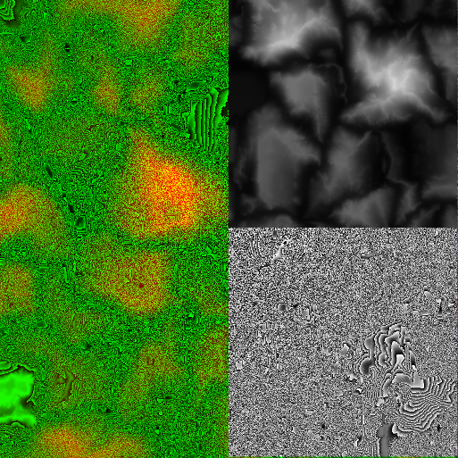

Urho3D terrain has a property, Smoothing, that is for some reason set to false by default. If you enable it with Terrain::SetSmoothing(true) then the result from an 8-bit PNG will be MUCH better. 16 bit (whether traditional 16-bit or the 16-bit split between R/G as Urho3D uses) really only comes in handy at much higher terrain resolutions than your original post exhibits, when the mesh is sufficient to show the smaller details. Still, I prefer 16-bit even with small terrains, as it simplifies the tooling. I don’t use WorldMachine, and in fact I use my own custom (and unfinished  ) terrain editor, but I do agree it would be nice if a traditional 16-bit PNG path was supported. Unfortunately, it is unlikely to be done until someone with a vested interest in it being done takes the initiative and does a pull request for it.
) terrain editor, but I do agree it would be nice if a traditional 16-bit PNG path was supported. Unfortunately, it is unlikely to be done until someone with a vested interest in it being done takes the initiative and does a pull request for it.
In regards to your question about how the R/G channels are used, the red channel ends up being essentially identical to a standard 8-bit PNG heightmap, while the green channel holds additional detail. Say you have a terrain that ranges from 0 to 255 units high. The whole part of a height value would be encoded in the R channel, while the fractional part is encoded in the green. Red will range in a gradient from the lows to the highs, while green ranges in a gradient in between the individual units of the red channel. A typical heightmap ends up looking something like this:

On the left is the composite R/G heightmap. Upper right is the red channel alone, and what it would be with just an 8-bit heightmap, on the lower right is the green channel. You can see that the large-scale features of the terrain are exhibited in the red channel, while the green holds only very small details.
If you don’t want to modify the image at run-time, it should be easy enough to write a converter offline tool to batch-process heightmaps from what WorldMachine outputs to what Urho3D R/G mode expects. It’s not optimal, I know, but for now that’s all I can really suggest.